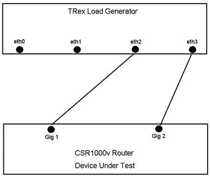
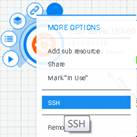

The Trex Sandbox environment consists of a Trex virtual machine and CSR1000v router. Using this simple setup, users can experiment with TRex and learn how the package works. The Sandbox environment is dedicated, meaning that the user has sole access to the resources for his/her use. Initial max reservation time is five days.
This is a simple network designed to showcase TRex. It allows the user to run different traffic types through the CSR router.
The Sandbox TRex network consists of a TRex VM and a CSR1000v router. These devices have been preconfigured to demonstrate how TRex can load test the router.
| TRex VM Interface | MAC Address | IP Address |
|---|---|---|
| Eth0 | 00:50:56:87:23:98 | 10.10.20.150 |
| Eth1 | 00:50:56:87:32:99 | 10.10.30.165 |
| Eth2 | 00:50:56:87:32:9a | 10.10.20.160 |
| Eth3 | 00:50:56:87:7f:cd | Not Defined |
| CSR1000v Interface | MAC Address | IP Address |
|---|---|---|
| Gig 1 | 00:50:56:87:51:99 | 10.10.20.150 |
| Gig 2 | 00:50:56:87:51:9a | 10.10.30.165 |
To access the TRex and CSR devices, hover over the resource icon and select “more options”. Then select “SSH”. A new window will open with command line access.
Credential information is not reqired.
Accessing the Sandbox DevicesTo quickly start running some test traffic, perform the following:
Note: Please do not make changes to the TRex server or CSR1000v router. This sandbox is intended for learning purposes. All activity is recorded.
Thank You,
DevNet Sandbox Team